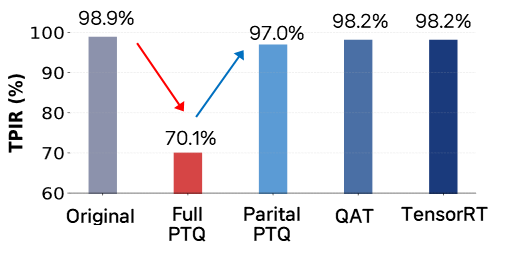
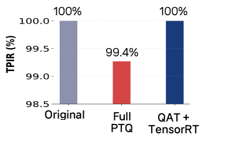

수학적 사고를 바탕으로, 잘 되는 것보다 왜 되는지를 먼저 묻습니다.
실험을 꼼꼼히 검증하여 신뢰할 수 있는 AI를 만듭니다.
얼굴 인식 연구에서 Open-set 인식과 증분 학습 문제를 다루며 Metric Learning 기반 임베딩 학습과 모델 최적화를 수행했습니다. 실제 환경의 복잡한 조건에서도 견고하게 동작하는 AI 모델 구현을 목표로 합니다.
석사 과정 동안 얼굴 인식과 패턴 분류 분야에서 두 개의 AI 연구 프로젝트를 수행
| 2024 | 2025 | |||||||||||||||||||||||
|---|---|---|---|---|---|---|---|---|---|---|---|---|---|---|---|---|---|---|---|---|---|---|---|---|
| 1 | 2 | 3 | 4 | 5 | 6 | 7 | 8 | 9 | 10 | 11 | 12 | 1 | 2 | 3 | 4 | 5 | 6 | 7 | 8 | 9 | 10 | 11 | 12 | |
| 01 얼굴 인식 | ||||||||||||||||||||||||
| 02 패턴 분류 | ||||||||||||||||||||||||
| 연구 소개 | Triplet Loss와 K-Means Replay를 활용해, 지속적으로 수집되는 신규 얼굴 데이터를 효율적으로 학습하면서 미등록 인물을 구분할 수 있는 얼굴 인식 구조 설계 |
| 데이터셋 | KFace, Color FERET |
| 사용 기술 | Python, PyTorch, OpenCV, Scikit-learn |
| 문제 및 성과 |
[이슈1] Open-set 얼굴 인식 성능
문제 기존 Softmax 모델의 Open-set 오분류 및 낮은 임베딩 응집력
성과 Triplet Loss와 임계값 기반 Unknown 메커니즘 설계 / 정확도(TPIR) 74.3% → 98.3% (FPIR=0.001 기준)
[이슈2] Class Incremental Learning 최적화
문제 증분 학습 시 기존 클래스 식별 성능이 저하 (Catastrophic Forgetting) 발생
성과 K-Means 기반 Replay 전략 도입 / 초기 단계 성능 대비 하락폭 0.5%로 최소화
[이슈3] 경량 백본 및 마진 최적화
문제 실시간 추론을 위한 경량 구조와 최적 margin 탐색 필요
성과 경량 CNN인 MobileNetV3 채택 및 마진 최적화를 통해 정확도 0.7% 추가 향상
|

| 적용 기법 | 정확도 (TPIR) |
|---|---|
| Original | 98.9% |
| Full PTQ | 70.1% |
| Partial PTQ | 97.0% |
| QAT | 98.2% |
| TensorRT | 98.2% |

| 배치 크기 | 지표 | FP32 | INT8 | 개선 |
|---|---|---|---|---|
| B=1 | Throughput | 565 qps | 837 qps | +48% |
| Latency | 1.86 ms | 1.28 ms | −31% | |
| B=16 | Throughput | 61 qps | 138 qps | +126% |
| Latency | 17.56 ms | 8.45 ms | −51% |
| FP32 Engine | INT8 Engine | 개선 | |
|---|---|---|---|
| 모델 용량 | 110 MB | 30 MB | −72.7% |
| 지표 | MobileNetV3-L | ConvNext-Tiny |
|---|---|---|
| FP32 정확도 | 98.93% | 100% |
| TRT 정확도 | 98.2% −0.7% | 100% 0% |
| FP32 throughput (B=1) | 2,332 qps | 565 qps |
| TRT throughput (B=1) | 1,835 qps −21% | 837 qps +48% |
| FP32 모델 크기 | 16 MB | 110 MB |
| TRT 모델 크기 | 6.2 MB −61% | 30 MB −72% |
| 양자화 안정성 | 불안정 (PTQ 70%) | 안정적 (≥99%) |
| 연구 소개 | 반응-확산 방정식으로 생성되는 튜링 패턴을 딥러닝 기반으로 분석하고, 일부 파라미터 지점에서 학습한 모델이 전체 파라미터 공간의 패턴 분포를 예측할 수 있는지 검증한 연구 |
| 역할 | 딥러닝 기반 패턴 분류 파이프라인 설계 및 실험 수행 |
| 데이터셋 | Lengyel-Epstein (LE) 모델을 통해 직접 생성한 튜링 패턴 데이터 |
| 사용 기술 | Python, MATLAB, TensorFlow, NumPy, JAX |
| 문제 및 성과 |
[이슈1] 시뮬레이션 데이터 생성 효율 개선
문제 리비전 과정에서 실험에 필요한 튜링 패턴 데이터를 빠르게 확보해야 했음
성과 시뮬레이션 코드를 JAX로 구현 / 데이터 생성 시간 56초 → 9초로 단축
[이슈2] 초경량 CNN 모델 설계 및 성능 극대화
문제 기존 Hand-crafted 방식은 성능이 낮고 확장성이 제한적
성과 최적 합성곱 신경망 구조를 도입하여 정확도 54.5% → 100% 개선
[이슈3] 미관측 영역 일반화 검증 및 한계 분석
문제 학습에 사용되지 않은 새로운 파라미터 조합에서의 일반화 성능 확인 필요
성과 400개 미관측 파라미터에서 모델 예측과 직접 라벨링한 결과를 비교하여 일반화 가능성 확인 및 Softmax 기반 분류의 한계 분석
|